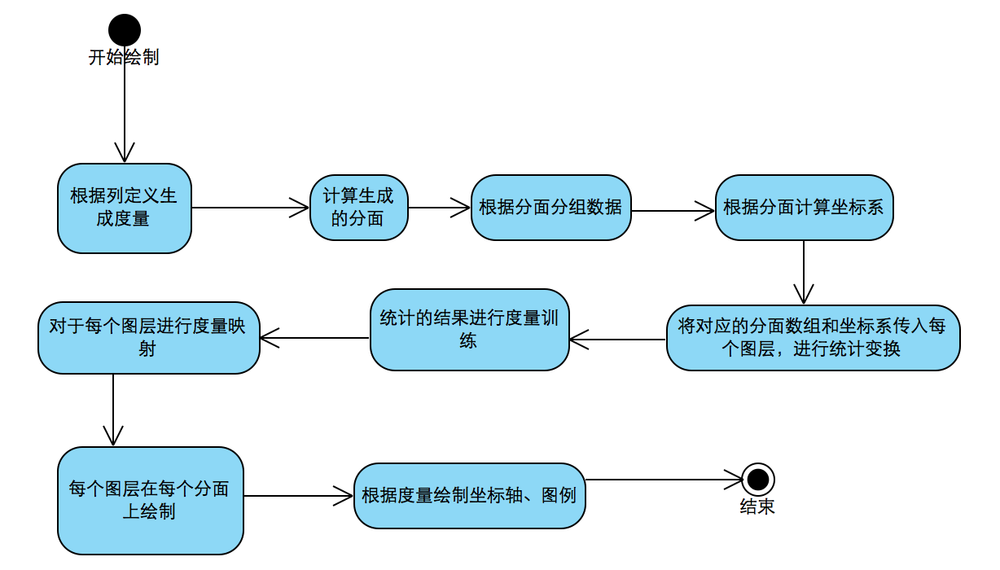

教程
简介
在前面的章节里你应该已经了解了一些 G2 的语法概念，但是为了更好的 得了解 G2，你需要掌握从数据到 G2 图表的转换过程，开始从数据的角度思考如何选择图表。
图表的生成过程
图表的生成过程主要有以几个过程：

说明
- 生成度量：根据各个几何图形对象（折线图、点图等）指定的字段，进行字段的初始化，判断数据的度量类型，如果用户自己定义列，则以用户定义的为主；
- 分面的详细内容参考分面，分面的切割字段一定要指定
cat类型的字段； - 每个分面自动生成一个坐标系，不同的分面类型，计算内部坐标系（位置、大小）的方式各不相同；
- 每个分面拥有自己的一份数据源，使用这些数据绘制单个分面；
- 把分面的数据传给每个图层，各个图层对数据进行初始化，进行统计变换，这个过程中数据的行列数可能会发生改变；
- 将所有分面统计变换后的数据集合汇总起来，对前面生成的度量进行训练，保证最终生成的坐标轴符合每个图层、每个分面；
- 将所有分面，所有图层的属性转换成画布上位置、颜色、大小、形状等相关的值，这个过程叫度量映射；
- 绘制所有的图层；
- 根据图层相关的度量，生成图例。
示例讲解
下面我们仍然用钻石的数据来说明上面的过程，为了简单起见，我们不设置分面，仅使用一个图层(interval)。
数据源和图表
这里我们需要绘制一张柱状图，用于表示使用不同钻石切割工艺（cut）的钻石平均价格，下面的表格仅显示其中的 5 条数据。
| carat | cut | color | clarity | depth | table | price | x | y | z |
|---|---|---|---|---|---|---|---|---|---|
| 1.01 | Good | G | VVS2 | 62.4 | 59 | 7332 | 6.32 | 6.37 | 3.96 |
| 1.56 | Very-Good | F | SI1 | 61.0 | 58 | 12207 | 7.41 | 7.48 | 4.54 |
| 0.73 | Very-Good | H | VS1 | 61.6 | 59 | 2641 | 5.74 | 5.81 | 3.56 |
| 0.32 | Ideal | G | SI1 | 62.3 | 57 | 508 | 4.38 | 4.41 | 2.74 |
| 2.02 | Good | H | SI2 | 59.0 | 61 | 13144 | 8.26 | 8.31 | 4.89 |
我们将使用下述语法生成：
chart.interval().position(Stat.summary.mean('cut*price')).color('cut');生成度量
- 这个柱状图仅有一个图层 (interval)，使用了 2 个属性 position 和 color，有 2 个数据字段 cut, price；
- 由于没有设定 color 和 price 的列定义，所以会根据数据的类型自动生成度量；
- cut 字段的数据都是字符串，所以会生成
cat类型的度量，自动取cut字段的所有类型作为度量的属性 values: ['Ideal','Good','Premium','Very-Good','Fair']； - price 字段的数据是数字，所以默认生成
linear类型的数据，此时计算出该字段的最大值、最小值。
生成坐标系
图层数据的初始化
- interval 图层中有2个字段参与了图表的生成，所以首先将这2个字段的数据提取出来形成新的数据源
| cut | price |
|---|---|
| Good | 7332 |
| Very-Good | 12207 |
| Very-Good | 2641 |
| Ideal | 508 |
| Good | 13144 |
- cut 字段是字符串类型数据，生成的度量是
cat类型，一共有'Ideal'、'Good'、'Premium'、'Very-Good' 和 'Fair' 5 种类型，由于未指定字符串的顺序，所以按照字符串出现的顺序将字符串转换成 0 - 4 的数字。
| cut | price |
|---|---|
| 1 | 7332 |
| 3 | 12207 |
| 3 | 2641 |
| 0 | 508 |
| 1 | 13144 |
如果你需要指定字符串的顺序，则可以使用列定义：
chart.source(data, {
'cut': {
type:'cat',
values: ['Ideal','Premium','Very-Good','Good','Fair']
}
});- 由于 interval 图层使用了
position之外的color属性对应的属性字段cut是 分类类型，所以对数据进行分组：
cut = 'Good' (cut = 1)的分组
| cut | price |
|---|---|
| 1 | 7332 |
| 1 | 13144 |
cut = 'Very-Good' (cut = 3)的分组
| cut | price |
|---|---|
| 3 | 12207 |
| 3 | 2641 |
cut = 'Ideal' (cut = 0)的分组
| cut | price |
|---|---|
| 0 | 508 |
数据进行统计变换
- 将上面数据初始化过程中生成的多组数据进行统计变换，每个分组都单独进行
Stat.summary.mean的求平均值的变换 - 下面的各组表格内部是全部数据集合（2000条）每个分组的平均值,其中
price字段进行了均值计算
cut = 'Good' (cut = 1)的分组
| cut | price |
|---|---|
| 1 | 4426.44 |
cut = 'Very-Good' (cut = 3)的分组
| cut | price |
|---|---|
| 3 | 3656.01 |
cut = 'Ideal' (cut = 0)的分组
| cut | price |
|---|---|
| 0 | 3326.85 |
度量训练
- 由于
price字段参与了统计变换，所以统计完成后需要进行度量的训练，重新计算度量的最大值、最小值 - 通过训练后的坐标系，确定了最大值(5000)、最小值后(3000)，为后面生成坐标轴做准备，生成各个坐标点（ticks)(3000,3500,4000,4500,5000)
属性映射
- 将
position属性对应的字段映射到坐标系的 x,y上，将color属性映射成各个颜色,将各个字段的数值通过度量转换到 [0-1]的范围
| cut | price |
|---|---|
| 0.25 | 0.723 |
| 0.75 | 0.328 |
| 0 | 0.163 |
- 通过坐标系将 cut和price的【0-1】范围内的数值转换成画布上的坐标点，将cut字段转换成颜色值，默认的颜色集合是： ['#727cc9','#57cffd','#7bc657','#fdb667','#f96a52','#00a3d7']
| cut | price | x | y | color |
|---|---|---|---|---|
| 0.25 | 0.723 | 640 | 280 | '#57cffd' |
| 0.75 | 0.328 | 1344 | 606 | '#fdb667' |
| 0 | 0.163 | 260 | 746 | '#727cc9' |
绘制图形
- 将数据的每条记录绘制成一个interval 图形，位置根据x,y决定，颜色根据 color 决定
- interval（柱状图形）的大小自动计算
生成坐标轴、图例
- 获取整个图表跟 position相关的度量
cut,price，分别绘制 x,y轴的坐标轴 - 获取position之外的属性
color生成颜色的图例
最终的图表
$.getJSON('/data.json?filename=diamond', function(data) {
var Stat = G2.Stat;
var chart = new G2.Chart({
id: 'c1',
width: 800,
height: 400,
plotCfg: {
margin: [20, 90, 60, 80]
}
});
chart.source(data);
chart.interval().position(Stat.summary.mean('cut*price')).color('cut');
chart.render();
});分面示例
下面是一个使用了树状分面的场景
chart.col('clarity', {
type: 'cat',
values: ['IF','VVS1','VVS2','VS1','VS2','SI1','SI2','I1']
});
chart.facet(['clarity'], {
type: 'tree',
line: {
stroke: '#c0d0e0'
},
smooth: true,
margin: 30
});
chart.interval().position(Stat.summary.mean('cut*price')).color('cut');生成度量
- cut、price 依然会自动生成
cat和linear类型的度量 - 用于分面的 clarity 字段,由于我们定义了 values 属性，所以指定了各个字符串的顺序
生成分面
- 由于指定了树形分面，分面的字段是
clarity，所以根据该字段对数据进行分组 - 每个分组代表一个分面，每个分面有一份数据，一个坐标系，坐标系的位置由树状结构确定
数据转换和统计变换
- 遍历每个分面，对每个分面的数据进行数据初始化和统计变换
度量训练
- 将各个分面的数据合并到一起，对参与统计的
price字段进行度量训练，计算出最大值、最小值和ticks
属性映射和绘制图形
- 每个分面各自进行位置、颜色的映射，并根据生成的数据各自生成柱状图
图例和坐标轴
- 每个分面各自创建自己的x轴和y轴
- 所有的分面共享图例
最终图表
$.getJSON('/data.json?filename=diamond',function (data) {
var Stat = G2.Stat;
var chart = new G2.Chart({
id: 'c2',
width: 800,
height: 400
});
chart.source(data);
chart.legend('top'); // 设置顶部图例
chart.facet(['clarity'], {
type: 'tree',
line: {
stroke: '#c0d0e0'
},
smooth:true,
margin: 30
});
chart.interval().position(Stat.summary.mean('cut*price')).color('cut');
chart.render();
});